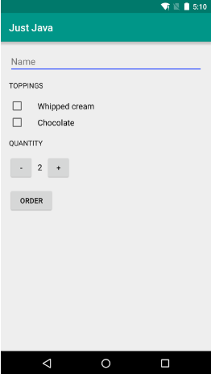
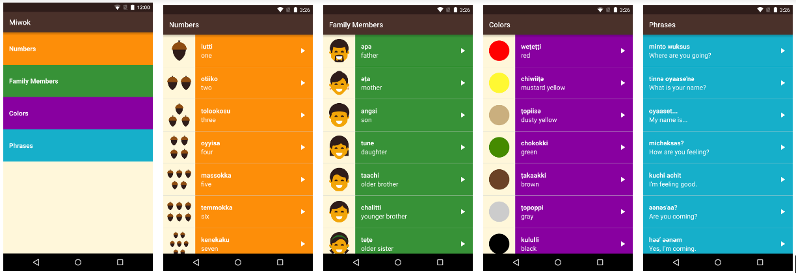

29. Pressed States on Category Views
Pressed States on Category Views
Touch feedback provides the user with instantaneous visual confirmation at the point of contact where they interacted with the UI elements on the screen. It is vital that the apps you develop on Android have touch feedback. They can make your app appear fast and responsive, even if nothing else happens yet.
Ever since Material Design was introduced in Lollipop, there is a circular ripple animation that happens when you interact with a UI elements.

On older versions of Android, there is a static colored pressed state.
In the last course, when we made the Just Java app, we used the standard Buttons from the Android framework. These buttons come up with standard feedback when you touch them.

In the Miwok app, we are creating our own clickable views - the category views in the MainActivity, and the list items in the category activities. We have to handle pressed states on our own.

By setting a view to have a background of ?android:attr/selectableItemBackground, the View will have a transparent background by default. When you touch or press the view, it will show the pressed state (which is the circular ripple animation). This behavior is the default touch feedback behavior defined in the Android framework.
Modify the Miwok app
In the last exercise, you modified the numbers category TextView to have the selectable item background. However, we lost the colored background.
1) In this coding task, replace the contents of the activity_main.xml with the below XML. Code is also provided in this gist. Each TextView is wrapped in a FrameLayout with a themed background, and then set the background of the TextView to be a ?android:attr/selectableItemBackground.
This way, we can keep the colored background per category view, as well as have touch feedback. And by the way, a FrameLayout is simply a ViewGroup that typically contains 1 child view.
In activity_main.xml file
<?xml version="1.0" encoding="utf-8"?>
<LinearLayout xmlns:android="http://schemas.android.com/apk/res/android"
xmlns:tools="http://schemas.android.com/tools"
android:layout_width="match_parent"
android:layout_height="match_parent"
android:background="@color/tan_background"
android:orientation="vertical"
tools:context="com.example.android.miwok.MainActivity">
<!-- Numbers category -->
<FrameLayout
android:layout_width="match_parent"
android:layout_height="wrap_content"
android:background="@color/category_numbers">
<TextView
android:id="@+id/numbers"
style="@style/CategoryStyle"
android:background="?android:attr/selectableItemBackground"
android:text="@string/category_numbers" />
</FrameLayout>
<!-- Family category -->
<FrameLayout
android:layout_width="match_parent"
android:layout_height="wrap_content"
android:background="@color/category_family">
<TextView
android:id="@+id/family"
style="@style/CategoryStyle"
android:background="?android:attr/selectableItemBackground"
android:text="@string/category_family" />
</FrameLayout>
<!-- Colors category -->
<FrameLayout
android:layout_width="match_parent"
android:layout_height="wrap_content"
android:background="@color/category_colors">
<TextView
android:id="@+id/colors"
style="@style/CategoryStyle"
android:background="?android:attr/selectableItemBackground"
android:text="@string/category_colors" />
</FrameLayout>
<!-- Phrases category -->
<FrameLayout
android:layout_width="match_parent"
android:layout_height="wrap_content"
android:background="@color/category_phrases">
<TextView
android:id="@+id/phrases"
style="@style/CategoryStyle"
android:background="?android:attr/selectableItemBackground"
android:text="@string/category_phrases" />
</FrameLayout>
</LinearLayout>2) Then run the app on your device and test that each button in the MainActivity has touch feedback.
Note: You could move the background attribute to the CategoryStyle definition in styles.xml, but I just declared it inline here, so it’d be easier for you to add into your app.
More Resources
We showed you a simplified way of adding touch feedback in your MainActivity in order to avoid going on too far of a tangent with new topics (such as state list drawables and managing resources for backward compatibility on older devices). However, our current approach does introduce more views into the view hierarchy, so it is less efficient.
If you want to learn the proper and more efficient way to setup touch feedback with a custom drawable, check out this video from the intermediate Udacity Android Fundamentals course. Or you can check out this Codepath tutorial on ripple animations.